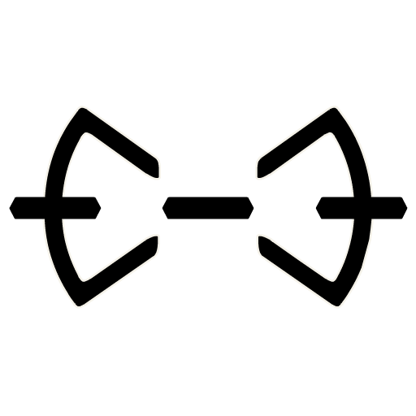
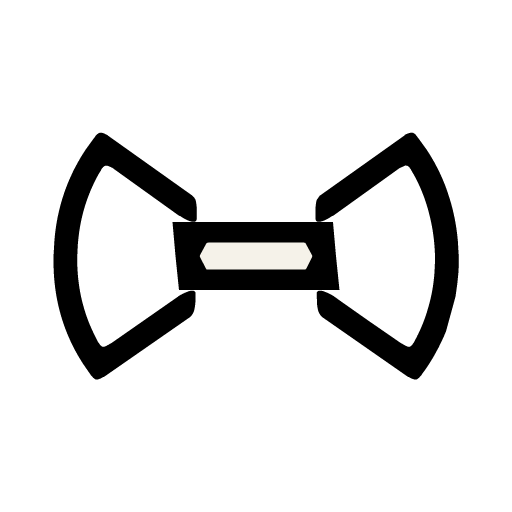

Loading

the-feed 30

Lexicon 0 is experimental on purpose: a first codebook for proving that simple transaction values can carry useful, playful, public meaning.


Lexicon 0 is experimental on purpose: a first codebook for proving that simple transaction values can carry useful, playful, public meaning.
Loading
Feed source: local fixture